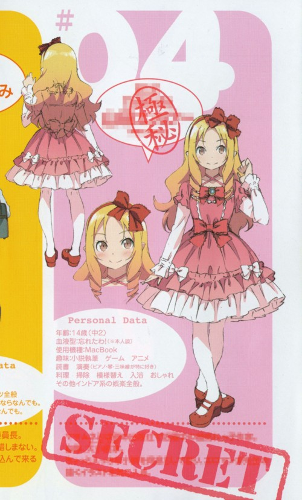

엘프
에로망가 선생의 등장인물.
작가의 전작인 내여귀와 비교하면 쿠로네코+쿠루스 카나코 포지션에 속한다.
주인공 이즈미 마사무네 옆집으로 이사온 14살의 유명 라이트 노벨 작가로 이즈미 마사무네는 야마다의 소설의 팬이다.
1권에선 주인공이 엘프의 책을 읽고 팬이 되는 계기가 나온다.
주인공의 여동생인 이즈미 사기리에게 신작 일러스트를 받기 위해 라이벌로써 경쟁하나 많은 것을 배우게 되는 매개체이기도 하다.
